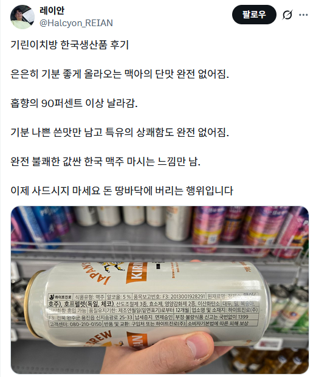

하이트 진로에서 생산중인데 그냥 K-맥주 됐다고함

하이트 진로에서 생산중인데 그냥 K-맥주 됐다고함
나도 매번 한국라거 오줌맛이라고 하는새끼들한테 항상하는말 ㅋㅋ
윗댓에서 스텔라 생산지 바뀌었다해서 알았는데
나도 최근에 맛 좀 전보다 별로라 안먹음
생각보다 맥주 향이 달라서 금방 알아챔
자주 먹던게 맛이 바뀌는 경우면 바로 알아차릴 수도 있는 듯
나도 자주 먹던 스텔라가 맛이 이상한거 같아서 찾아보니 국내생산 시작한거 알기도 했고..
ㅋㅋㅋㅋㅋㅋ넌 주식이나 도박 절대하지 말아라ㅋㅋㅋㅋ
내가 누렁이 입맛에 코카콜라 펩시 구분못하고 맛알못인데도 알겠더라
맥주맛 모를땐 똑같아서 국산먹다 수입산 세일해서 수입먹을땐 몰랐다가 다시 아무생각없이 카스인가 하이트 사서 첫모금에 ?!?!했다ㅋㅋㅋㅋ
맛알못이라 맥주한동안 안마시다 마시면 모르는데 먹다 먹으면 물탄맛이 뭔진 알수있음
괜히 독일인이 국산맥주 첫모금에 인상찌푸리는게아님ㅋㅋ
난 반대로 맥주는 잘 모르는데 콜라는 구별함 ㅋㅋㅋㅋ
근데 많이 마시는 사람은 알아
블라인드 테스트했는데 다들 구별 못한다고?
걔들은 그냥 먹어도 구별 못하는애들일거임
너 맥주 좋아함?
먹는 사람은 다 알어
너 맥주 별로 안 좋아하는건 알겠다
지랄 ㅋㅋㅋㅋㅋ 난 한국 맥주 맛없다는 동의 안하지만 생산 공장마다 맛 다른건 그냥 먹어보면 바로 알 수 있는데


근데 나는 콜라도 일본 콜라가 더 맛있더라고 탄산도 더 쎄고 ㅋㅋ
아사히 생맥캔이 진짜 좆되던데. 산프몰에서 갈아탐.
그거 진짜 맛있더라
누렁이 입맛인데도 친구집에 놀러가서 첫모금 마시자마자 !?!? 했음 ㅋㅋㅋ
난 쇼쿠사이가 진짜 잘 맞더러. 아사히 생맥 마시다가 이걸로 바꿈ㅋㅋㅋ
내가 좋아하던 호가든 국내생산후 으엑
내가 좋아하던 타이거 네덜란드생산으로 바뀐후 너프
근데 이제 기린이치방 마저 슬프다
기린좋아했었는디..
카스는 안주먹고 싹깔끔하게하는 일종의 가글임
맥주는 모르겠고.. 독일코카콜라랑 한국거 맛이 너무 다른데, 답을 못찾아서 그냥 물맛이라 혼자 결론 내림..
인니도 콜라 맛이 다르더라 한국이랑
정확히는 캔마다 맛이 다른개체가 있는데 한국처럼 생산공장이 다른걸로 추정중
참 신기해 .. 본사에서 원액주고 품질검수 할텐데 맛이 그렇게 다른게.. 그 정도는 허용범위라고 생각하는거겠지?
그러니깐 아니면 맛 컴플레인 자체는 없으니까 그러는걸지도
사실상 내용 구성이 테라랑 동일해짐.
SNS 피셜들 대부분은 걸러도 되지만 요거는 맞음
80년전에 만들던거라 그맛이 안나오나?
맥주는 한번씩 잘 보고 사야됨 대체생산 넘 많아
할인해서 싸다고 와이프가 잔뜩 사옴....한달은 저거만 먹어야함...
걍 이름 껍데기만 빌렸구나
산프몰, 비라모레띠 드십쇼
편의점에서 살 수 잇는 최고의 맥주 투톱이다
1. 커뮤만 난리지 보통 한국인소비자들은 저 맛을 좋아함
2. 맛이 변하더라도 일단 '해외브랜드'면 좋다하고 벌컥 마셔주니까
둘 중 하나 같은데
저거 블라인드테스트 하면 조회수좀 빨겠는데
나가노 오켕키데수까
ㄹㅇ 실제로 한국생산품 품질이 병신이라고 가정하면 그 병신품질로 생산했는데 라이센스 준 놈도 병신이란 소리밖에 더됨?